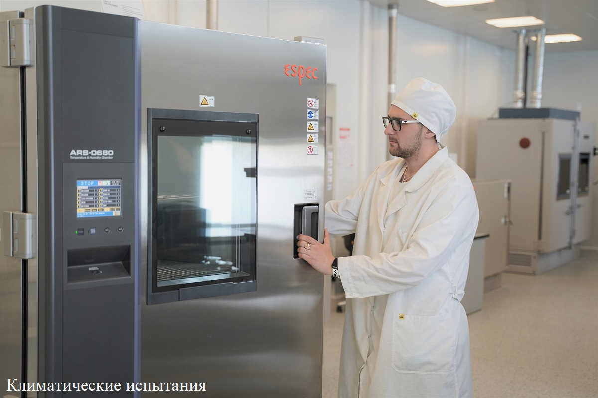

Климатические испытания – это испытания на стойкость при воздействии внешних воздействующих факторов, таких как температура (пониженная и повышенная), воздействие влажности, воздействие пониженного и повышенного атмосферного давления, соляного тумана, песка и пыли, дождя и солнечного излучения, плесневых грибов. Специалистами лаборатории испытательного центра ФГУП «МНИИРИП» реализуется полный спектр испытаний на стойкость к климатическим и биологическим воздействующим факторам. Испытания проводятся в интересах разработчиков и производителей ЭКБ и РЭА, в том числе в рамках выполнения ОКР, а также сертификационные испытания ЭКБ ИП. При необходимости, в соответствии с техническим заданием заказчика сотрудниками лаборатории могут быть разработаны программы и методики испытаний. Испытания проводятся квалифицированными инженерами на современном оборудовании, аттестованном в соответствии с установленными требованиями, средства измерений периодически проходят поверку. Для испытаний изделий в рабочем режиме, а также проверки функционирования, к испытательным камерам и стендам может подаваться напряжение постоянного и переменного тока. По результатам климатических испытаний выдается протокол, оформленный в соответствии с установленными требованиями. При необходимости, испытания могут проводиться под контролем ВП МО РФ.
